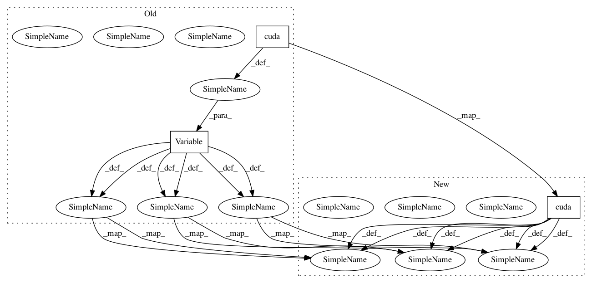

f972e4237e2a8615c80950f2b987924256586e5c,train.py,,,#,11
Before Change
trainer.cuda()
train_loader_a, train_loader_b, test_loader_a, test_loader_b = get_all_data_loaders(config)
train_display_images_a = Variable(torch.stack([train_loader_a.dataset[i] for i in range(display_size)]).cuda())
train_display_images_b = Variable(torch.stack([train_loader_b.dataset[i] for i in range(display_size)]).cuda())
test_display_images_a = Variable(torch.stack([test_loader_a.dataset[i] for i in range(display_size)]).cuda())
test_display_images_b = Variable(torch.stack([test_loader_b.dataset[i] for i in range(display_size)]).cuda())
// Setup logger and output folders
model_name = os.path.splitext(os.path.basename(opts.config))[0]
train_writer = tensorboardX.SummaryWriter(os.path.join(opts.output_path + "/logs", model_name))
output_directory = os.path.join(opts.output_path + "/outputs", model_name)
checkpoint_directory, image_directory = prepare_sub_folder(output_directory)
shutil.copy(opts.config, os.path.join(output_directory, "config.yaml")) // copy config file to output folder
// Start training
iterations = trainer.resume(checkpoint_directory, hyperparameters=config) if opts.resume else 0
while True:
for it, (images_a, images_b) in enumerate(zip(train_loader_a, train_loader_b)):
trainer.update_learning_rate()
images_a, images_b = Variable(images_a.cuda()), Variable(images_b.cuda())
// Main training code
trainer.dis_update(images_a, images_b, config)
trainer.gen_update(images_a, images_b, config)
// Dump training stats in log file
if (iterations + 1) % config["log_iter"] == 0:
print("Iteration: %08d/%08d" % (iterations + 1, max_iter))
write_loss(iterations, trainer, train_writer)
// Write images
if (iterations + 1) % config["image_save_iter"] == 0:
with torch.no_grad():
test_image_outputs = trainer.sample(test_display_images_a, test_display_images_b)
train_image_outputs = trainer.sample(train_display_images_a, train_display_images_b)
write_2images(test_image_outputs, display_size, image_directory, "test_%08d" % (iterations + 1))
write_2images(train_image_outputs, display_size, image_directory, "train_%08d" % (iterations + 1))
// HTML
write_html(output_directory + "/index.html", iterations + 1, config["image_save_iter"], "images")
if (iterations + 1) % config["image_display_iter"] == 0:
with torch.no_grad():
image_outputs = trainer.sample(train_display_images_a, train_display_images_b)
write_2images(image_outputs, display_size, image_directory, "train_current")
// Save network weights
After Change
trainer.cuda()
train_loader_a, train_loader_b, test_loader_a, test_loader_b = get_all_data_loaders(config)
train_display_images_a = torch.stack([train_loader_a.dataset[i] for i in range(display_size)]).cuda()
train_display_images_b = torch.stack([train_loader_b.dataset[i] for i in range(display_size)]).cuda()
test_display_images_a = torch.stack([test_loader_a.dataset[i] for i in range(display_size)]).cuda()
test_display_images_b = torch.stack([test_loader_b.dataset[i] for i in range(display_size)]).cuda()
// Setup logger and output folders
model_name = os.path.splitext(os.path.basename(opts.config))[0]
train_writer = tensorboardX.SummaryWriter(os.path.join(opts.output_path + "/logs", model_name))
output_directory = os.path.join(opts.output_path + "/outputs", model_name)
checkpoint_directory, image_directory = prepare_sub_folder(output_directory)
shutil.copy(opts.config, os.path.join(output_directory, "config.yaml")) // copy config file to output folder
// Start training
iterations = trainer.resume(checkpoint_directory, hyperparameters=config) if opts.resume else 0
while True:
for it, (images_a, images_b) in enumerate(zip(train_loader_a, train_loader_b)):
trainer.update_learning_rate()
images_a, images_b = images_a.cuda().detach(), images_b.cuda().detach()
with Timer("Elapsed time in update: %f"):
// Main training code
trainer.dis_update(images_a, images_b, config)
trainer.gen_update(images_a, images_b, config)
torch.cuda.synchronize()
// Dump training stats in log file
if (iterations + 1) % config["log_iter"] == 0:
print("Iteration: %08d/%08d" % (iterations + 1, max_iter))
write_loss(iterations, trainer, train_writer)
// Write images
if (iterations + 1) % config["image_save_iter"] == 0:
with torch.no_grad():
test_image_outputs = trainer.sample(test_display_images_a, test_display_images_b)
train_image_outputs = trainer.sample(train_display_images_a, train_display_images_b)
write_2images(test_image_outputs, display_size, image_directory, "test_%08d" % (iterations + 1))
write_2images(train_image_outputs, display_size, image_directory, "train_%08d" % (iterations + 1))
// HTML
write_html(output_directory + "/index.html", iterations + 1, config["image_save_iter"], "images")
if (iterations + 1) % config["image_display_iter"] == 0:
with torch.no_grad():
image_outputs = trainer.sample(train_display_images_a, train_display_images_b)
write_2images(image_outputs, display_size, image_directory, "train_current")
// Save network weights
In pattern: SUPERPATTERN
Frequency: 4
Non-data size: 3
Instances
Project Name: NVlabs/MUNIT
Commit Name: f972e4237e2a8615c80950f2b987924256586e5c
Time: 2018-07-27
Author: mingyu.liu.tw@gmail.com
File Name: train.py
Class Name:
Method Name:
Project Name: keon/seq2seq
Commit Name: 2321f8789713a086978f6e37d088bd00aa60e5f0
Time: 2020-03-07
Author: amitmoryossef@gmail.com
File Name: train.py
Class Name:
Method Name: evaluate